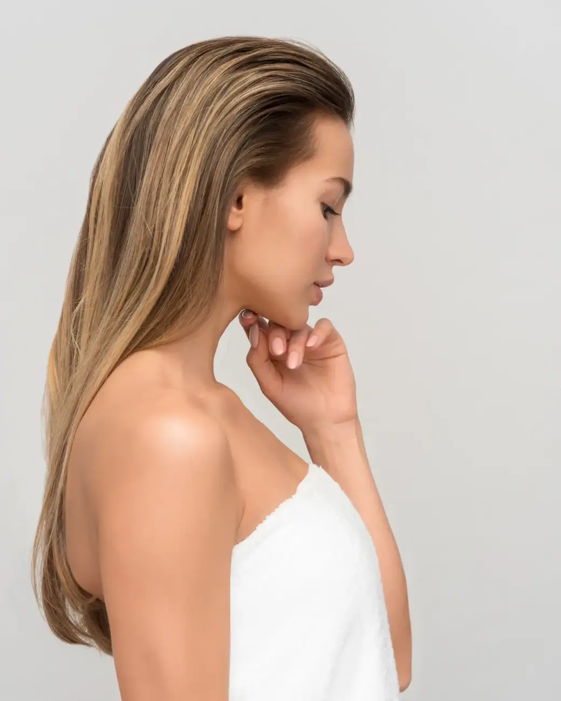
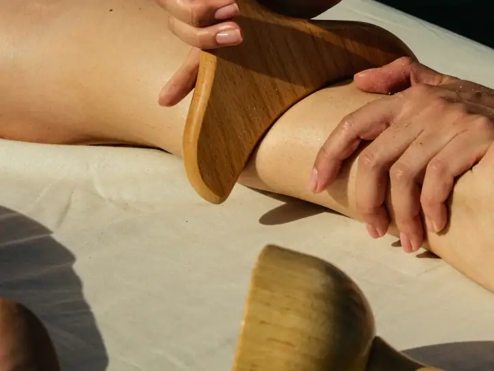
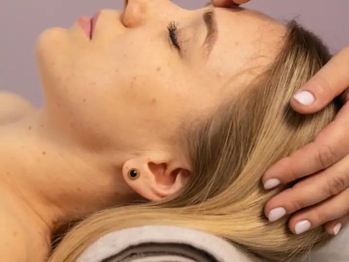
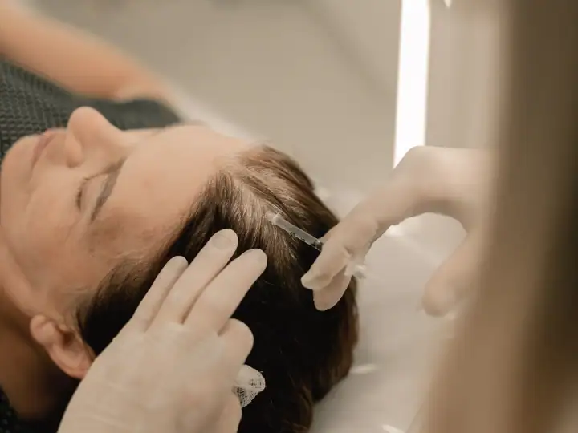
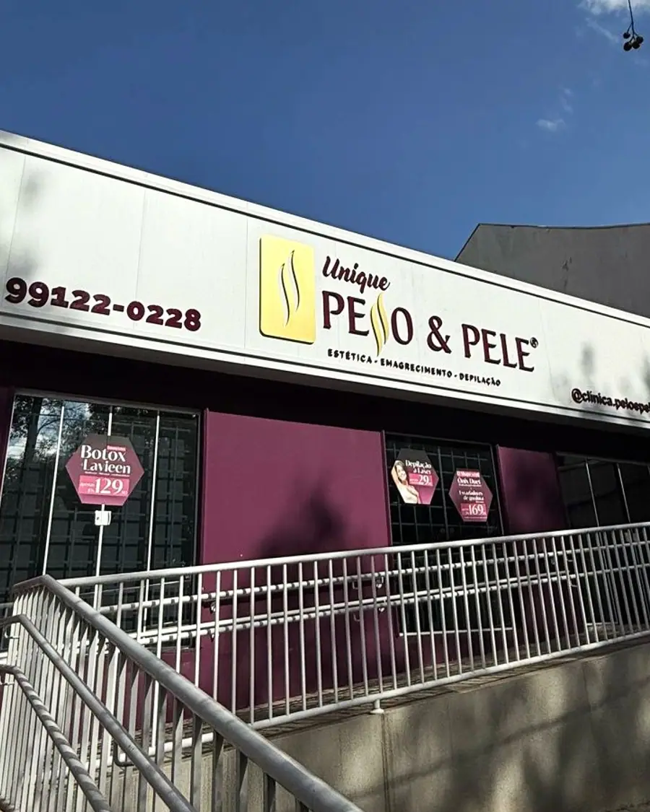

01
Depilação a laser
Redução duradoura dos pelos com sessões programadas e parâmetros ajustados ao seu tipo de pele.
Agendar avaliaçãoDepilação a laser e estética no Guanabara · Londrina
Depilação a laser, tratamentos para flacidez, rejuvenescimento, gordura localizada e queda capilar numa clínica com mais de 11 mil atendimentos em Londrina. Nota 5,0 com 75 avaliações no Google.

+11 mil atendimentos
Escolha o procedimento e fale direto com a Unique Pelo & Pele. A mensagem já vai pronta no WhatsApp.
Redução duradoura dos pelos com sessões programadas e parâmetros ajustados ao seu tipo de pele.
Agendar avaliação
Tecnologias para firmeza da pele, flacidez e rejuvenescimento, sem cortes.
Agendar avaliação
Protocolos para gordura localizada, flacidez e celulite, combinados de acordo com a sua avaliação.
Agendar avaliação
Hidratação, massagem e ativos para devolver o viço e o brilho natural da pele.
Agendar avaliação
Avaliação do couro cabeludo e protocolos para queda e enfraquecimento dos fios.
Agendar avaliação
Estimula o colágeno da própria pele para melhorar firmeza e flacidez de forma gradual.
Agendar avaliação
Na Unique você resolve pelos, flacidez, gordura localizada e cabelo no mesmo endereço, com aparelhos modernos e uma equipe que acompanha cada sessão até o resultado.
Primeiro a avaliação, depois o plano. Você entende cada etapa antes de começar.
Conte o que você quer melhorar. A equipe responde, tira as primeiras dúvidas e marca o melhor horário.
A profissional avalia sua pele ou seu corpo, explica as opções e monta um plano com as sessões indicadas.
Você decide com calma e é acompanhada em cada sessão, com orientações para cuidar em casa.
Segunda a sexta: 09h–19h · Sábado: 09h–14h
Avaliações reais de clientes publicadas no Google Maps.
“Atendimento personalizado! Na avaliação fui ouvida atentamente quanto as minhas queixas e expectativas.Recebi de forma assertiva e honesta tudo o que a clínica teria para oferecer para alcançarmos meu objetivo.”
“O atendimento na Unique pelo e pele é realmente diferenciado, com um cuidado extremamente humanizado. 💖 A cada procedimento estético, a gente se sente segura, acolhida e renovada. Os equipamentos são de última geração e garantem resultados incríveis.”
“Clínica maravilhosa, profissionais excelentes e atenciosos com os clientes. A clínica possui aparelhos novos e tratamentos modernos, com excelentes resultados. Ambiente agradável e limpo e tem estacionamento na frente.”
“Minha experiência com a clínica foi a melhor possível, desde o atendimento até a transparência em relação aos procedimentos e resultados. Achei o preço acessível. Voltarei para fazer outros procedimentos.”
“Atendimento impecável, aparelhos com tecnologia de ponta para depilação e tratamentos de pele. Os melhores injetáveis que fiz foi na clínica. Estacionamento na frente, localização maravilhosa.”
Não achou sua dúvida? Pergunte direto para a equipe no WhatsApp.
A Unique Pelo & Pele fica na R. Bento Munhoz da Rocha Neto, 221, Guanabara, em Londrina (PR), CEP 86050-010. Pelo botão "Traçar rota" nesta página você abre o caminho direto no Google Maps.
A Unique Pelo & Pele atende segunda a sexta, das 09h às 19h; sábado, das 09h às 14h. Aos domingos fica fechada. O agendamento é feito pelo WhatsApp.
É só chamar no WhatsApp (43) 99122-0228 pelo botão "Agendar avaliação". A equipe responde, tira suas dúvidas e marca o melhor horário para a sua avaliação.
Depilação a laser, Radiofrequência e aparelhos, Tratamentos corporais, Revitalização facial, Terapia capilar e bioestimulador de colágeno. O procedimento indicado para você é definido na avaliação.
Normalmente entre 6 e 10 sessões, com intervalo de algumas semanas. O número varia conforme a região, a cor do pelo e o tipo de pele.
Ajuda em muitos casos, depois de uma avaliação do couro cabeludo para entender a causa da queda. Em alguns casos, é indicado também o acompanhamento médico.
O resultado é gradual: a pele vai ficando mais firme ao longo de semanas, conforme o colágeno é produzido. O número de sessões é definido na avaliação.
Agende sua avaliação na Unique Pelo & Pele em poucos minutos pelo WhatsApp.